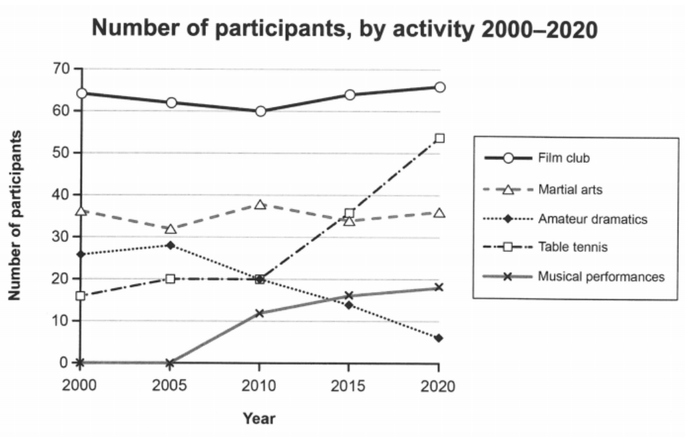

IELTS Writing¶
约 5447 个字 1 张图片 预计阅读时间 18 分钟
Task 1¶
[!NOTE]
Introduction: paraphrase the question
Overview: main, general things(2 sentences, 2 main points)
Details
Details
Vocabulary
| 动词 | A | B |
|---|---|---|
| 数据显示了... | The figure shows/describes/depicts/illustrates/indicates | |
| 上升、增加 | increase/rise/climb/grow-growth, ascent(n) | jump/surge/soar(v)/rocket to |
| 下降、减少（骤降） | decrease/fall/drop/decline/slip to | fall sharply/plummet to |
| 保持 | stay at / remain stable at/ maintain the same level | |
| 达到顶峰 | reach a peak of / peak at | culminate in/with + number |
| 达到谷底 | reach the bottom at/bottom out at | hit the nadir |
| 波动 | fluctuate/oscillate between ... and ... | rebound |
| 超过 | overtake/exceed/surpass | |
| 多于/少于 | more/less than, outnumber | over/under, below |
| 相似的趋势 | follow a very similar trend | ... are comparable |
| 达到多少数量 | reach at / arrive at / amount to | |
| 占据 | account for/make up/ constitute + xx percent of ... | |
| 排在第二 | rank second | |
| 是...的倍数 | xx times as much as/ double/triple | |
| 发生 | take place/ happen/occur | |
| 值得注意 | be worth noting that/ noteworthy that | |
| 预测 | be predicted/projected | |
| 程度 | adj | adv |
|---|---|---|
| 显著的/地 | sharp, dramatic, pronounced, steep, considerable, notable, marked, significant | sharply, dramatically, significantly, markedly, considerably |
| 明显的 | obvious/evident/apparent/clear | |
| 大量的 | substantial | |
| 轻微地 | a little/sightly/marginally | |
| 逐渐的/地 | gradual | gradually |
| 大约 | about/around/almost/roughly/approximately | |
| 稳定的/地 | steady | steadily |
| 不稳定的 | unstable/volatile | |
| 仅仅、唯一地 | exclusively |
| 名词 | ||
|---|---|---|
| ...的比例 | the percentage of | the proportion of |
| 阶段 | stage/part/phase | |
| 分类 | classification | a breakdown of different types of |
| 转变 | switch/shift/change | |
| 趋势 | (upward/downward) trend | |
| 句式 | ||
|---|---|---|
| 在之后的时间里 | from this point onwards | over the following/subsequent periods/months/years |
| 与此同时 | meanwhile/at the same time | likewise/similarly |
| 相反 | by contrast/conversely | |
| 总体来说 | overall/in general | |
| 关于/就...而言 | in terms of/ when it comes to/ with regard to/as for | concerning/about |
折线图 line graphs¶
[!NOTE]
P2: make general comparison(summary/overview) 最普遍的特点
P3-4: compare lines at specific points, every line is compared
1. Percentage of population in living cities
This line graph illustrates the proportion of urban citizens in Philippines, Malaysia, Thailand and Indonesia between 1970 and 2020, with the expected population in 2030 and 2040.
Overall, it can be easily seen from the graph that all four countries has a dramatic rise in population, starting at the lowest point in 1970 and being projected to reach the peak in 2040.
Malaysia starts at 30%, about twice as much as Indonesia. After that, both showed an obvious increase, with the former rising to approximately 76% in 2020, and the latter rising to approximately 50%. Both sides are expected to continue rising thereafter, with Malaysia slowly rising to about 83%, while Indonesia is expected to see a 12% gain.
The starting point of Philippines is about 31%, which is about 13% higher than Thailand. Over the next decade, the Philippines remained relatively stable. Between 1980 and 1990, the Philippines rose to about 48%, but fell to about 42% over the next 20 years. During this period, Thailand showed a gradual increase from 18% to approximately 30%. After 2010, both countries are expected to show an upward trend, rising to 55% and 49% respectively.
2. changes in the size of the ozone hole
The two line graphs illustrate changes in the size of the ozone hole over Antarctica and the production levels of three types of harmful gases (Freon, NO₂, and H₂O₂) from 1980 to 2000.
Overall, the size of the Antarctic ozone hole expanded significantly over the 20-year period. The production of Freon initially rose before falling sharply, whereas NO₂ and H₂O₂ displayed steady increases towards the end of the period.
In terms of the ozone hole size, it grew rapidly from approximately 50,000 square kilometers in 1980 to around 200,000 square kilometers by 1990. This increase was particularly steep between 1985 and 1990. Subsequently, the growth rate slowed, with the hole expanding more gradually to about 240,000 square kilometers by the year 2000.
Regarding the production of damaging gases, Freon initially experienced an upward trend, peaking at 200,000 metric tons in 1985. However, its production then decreased dramatically, plummeting to around 20,000 metric tons by the end of the period. In contrast, the levels of NO₂ remained relatively stable at around 110,000 metric tons from 1980 to 1990, after which it saw a substantial rise, reaching 160,000 metric tons by 2000.
Similarly, H₂O₂ production began at zero in 1980 but showed a gradual increase to approximately 18,000 metric tons by 1990. From this point onwards, it surged significantly, ending the period at 80,000 metric tons.
3. numbers of participants for different activities

The line graph illustrates the number of participants involved in five activities—film club, martial arts, amateur dramatics, table tennis, and musical performances—at a social center in Melbourne, Australia, from 2000 to 2020.
Overall, the film club consistently had the highest participation throughout the period, while amateur dramatics saw a steady decline. Musical performances, on the other hand, experienced a significant increase in participants, overtaking other activities except for the film club by 2020.
The film club started at around 63 in 2000, and then fluctuated slightly before rising to nearly 65 by 2020. Martial arts had the second-largest participation initially, with about 35 attendees, and remained relatively stable over the period, with minor fluctuations.
Amateur dramatics started with approximately 26 participants in 2000 but experienced a gradual decline, reaching less than 10 by 2020. In contrast, table tennis saw a remarkable growth over the years, surpassing amateur dramatics and martial arts in 2015 and climbing to over 50 participants by 2020.
Musical performances showed a dramatic increase in popularity. Starting with no participants in 2000 and 2005, it rose rapidly, surpassing amateur dramatics around 2010. By 2020, it had reached nearly 20 participants.
5. the percentage of the population living in cities
The line graph illustrates the percentage of the population living in cities in four Asian countries—Philippines, Malaysia, Thailand, and Indonesia—from 1970 to 2020, with projections for 2030 and 2040.
It is clear that urbanization has increased in all four countries, with Malaysia having the highest proportion of urban residents, while Indonesia started with the lowest percentage.
In 1970, both the Philippines and Malaysia had urban populations of around 30%. However, Malaysia's urbanization rate surged after 1990, reaching approximately 75% in 2020 and is projected to exceed 80% by 2040. In contrast, the Philippines experienced a slight decline between 1990 and 2010 before continuing its upward trend.
Indonesia began with the lowest percentage (around 13%) but witnessed rapid urban growth, surpassing Thailand in 2000 and the Philippines in 2010. By 2040, it is expected to be the second most urbanized country among the four. Meanwhile, Thailand's urban population increased steadily from below 20% in 1970 to around 30% in 2020 and is predicted to reach approximately 45% by 2040.
饼图 pie chart¶
[!NOTE]
compare countries and years together
1.
The three pie charts illustrate the proportion of four types of vehicles used in the UK in 1965, 1985, and 2005.
Overall, there is a significant rise in the proportion of private cars over time, while the proportions of lorries and other commercial vehicles, as well as recreational vehicles, experience a gradual decrease. Public transport remains relatively stable over the period.
With regard to private cars, the proportion starts at 40% in 1965, increases to 55% in 1985, and reaches 60% by 2005. Public transport initially accounts for 25% in 1965, drops slightly to 20% in 1985, and then rises to 22% in 2005.
In terms of lorries and other commercial vehicles, the proportion remains steady at 20% in 1965 and 1985, before falling by half to 10% in 2005. Recreational vehicles are always the least popular vehicles which show a decline from 15% in 1965 to 5% in 1985, with a small rise to 8% in 2005.
柱状图 bar chart¶
[!NOTE]
有时间变化，类似line graph
1. Number of US household in millions by their annual income
This bar chart illustrates the numbers of US household in millions by their annual income in 2007, 2011 and 2015 respectively.
Overall, it can be easily seen that households of $100000 or more climbs apparently and is the most, while other remain nearly steady, with $25000-$49999 the second, followed by less than $25000 and the $50000-$74999, and the $75000-$99999 the last.
From the graph, less than $25000 and $25000-$49999 first rise in 2011 and sightly fall in 2015, from 25 to 29 to 28 and 27 to 30 to 29 respectively. While $75000-$99999 and $100000 or more are the other way around, beginning at 14.5 and 29.5, decreasing to 14 and 27 and ending with 15 and 33. The middle bar, namely $50000-$74999 remains level in the three years, roughly 21.
In 2011, the bars of $25000-$49999 and less than $25000 exceed $100000 or more at a marginal edge. But the $100000 or more has witnessed a dramatic increase in 2015, approximately from the lowest point 27 to 33.
2. Number of international applicants from four countries
The bar chart below illustrates the number of international applicants from four countries (China, Japan, America, Russia) that a European university had from 2004 to 2008.
Overall, the total number of applicants from four countries generally remain stable over the period, while the respective numbers of applicants from different countries changed greatly. Generally, China and America had the highest numbers of applicants, followed by Japan, with Russia consistently having the fewest.
The number of applicants from China experienced a notable decline, beginning at approximately 27,000 in 2004, stabilizing at around 17,000 in 2006 and 2007, and finally dropping to 15,000 in 2008. In contrast, applicants from Japan showed a gradual upward trend, starting at 5,000 in 2004 and doubling to 10,000 by 2008.
Applications from America fluctuated over the period. They started at 20,000 in 2004, decreased to a low of 10,000 in 2007, and then surged to 27,000 in 2008. The number of Russian applicants steadily increased from around 1,000 in 2004 to 8,000 in 2007, before dropping sharply to approximately 3,000 in 2008.
表格 Table¶
[!NOTE]
混合图¶
[!NOTE]
第三第四段分别描述一个图
流程图 process diagram¶
Task 2¶
[!NOTE]
扣题+连贯
- 题型回应+限定词回应+拓展充分
- 连贯和流畅：连接词+代词+核心段拓展公式
- 语法：主语多元化+短语搭配
CC核心段拓展公式（cohesion+coherence）
公式1：一个核心段只分析一个好/坏处（题目有限定/一边倒结构）
- 开门见山
- 解释（because+原因 / To be specific + 细节）
- For example, 举例（具体）
- In contrast / If not 反证法
- Therefore, 改写第一句话
具体结论：钱，身体健康，学业，自然环境，某种能力，心情（压力），就业，犯罪，安全，生活质量，交通，某种性格，多样性，时间，和平
公式2：一个核心段分析题目相关的两到三个好/坏处（适用于讨论discuss或者outweigh）
- 使用数量词（some/many/several/a number of/ two）引出大方向
- 引出第一个结论
- as 原因分析
- What’s more, 给出第二个结论
- since原因分析（举例）
先给出具体的结论，再做出客观的解释；结论要窄一些，有助于找到直接的拓展方向
TR-Discuss 题型
题目：Some people think A, while others think B. Discuss both opinions and give your own opinion.
情况1：A和B是一件事的好和坏——好坏
情况2：A和B分别是两件事的各自好处——好好
审题思路：
- 先分析A/B的拓展
- 再斩钉截铁给出个人观点：偏向性观点（首尾一致） > 取决于 > 缺一不可
写作结构：
- 开门见山（改写原题）+简单预告自己的观点（比较/depend on/coexist）
- On the one hand, 拓展一方观点合理性
- On the other hand, 拓展另一方观点合理性
- 重复观点（详细解释）
两个核心段细节要求：
- 字数平衡
- 第三人称
- 尽可能用推测语气（could/may/tend to），不要用will写结果
- 拓展方法看题目有没有限定（positive/negative），没有就自己看着办
- 如果选择的是偏向性观点，核心段必须满足先弱后强的出场顺序
TR-Report 题型
题目：给出现象，回答两个问题（原因分析+解决方案 / 原因分析+有何影响 / 导致问题+解决方案）
写作结构：
- 改写原题现象+简单预告要回答的两个问题
- 分析两个原因
- 提供多个解决方案（根据方案回答影响）
- 综上所述（改写总结前面的两个部分）
专属于 report 题型的原因分析段细节要求（占核心段10%)
- 必须给出放之四海而皆准的原因
- 必须给出根本的 and 客观的原因分析（不走意识流派）
- 原因类的题目出现比较级时，一定要用变化的原因分析
可参考的原因出发点：生活成本不断上升．互联网的某个方向，广告增加，某种科技、人口增长，出生率下降．女性地位提高
扩展方法3：开门见山给出一个原因→举例／这意味着…→因此．引出题目现象
解决方案
- 详细描述到底谁来做什么（举例子）
- 奖励、惩罚、提高成本、法律法规、政府投资、宣传必须细化
- 解决方案不需要和前面完美对应，尽量做到就好
第二个问题问影响，要根据提问方式做出回答：
- 如果问的是 positive or negative，选择单边扩展
- 如果问的是 what are the effects on，根据限定来回答
TR ﹣是否赞同
出题：题目中给一个建议/评价/观点，要求考生回答： to what extent do you agree / disagree ≈ positive or negative ?
第一种思路：完全赞同此观点→少，好的趋势2-3好处 第二种思路：完全不赞同此观点→多，坏的趋势2-3坏处 第三种思路：一分为二→必须有一个明确的立场，好坏取决于（不太推荐）
必典提问分析 第一大类：题目中出现极端／绝对词汇最重要／最好的／唯一 eg1.互联网是人类历史上最重要的发明，是否赞同？不赞同．都重要 eg2提高获取驾照年龄来减少交通事故是最好的方法，是否赞同？不赞同．不有效
第二大类：题目给出一个肤浅／弱智向观点，考虑你的反驳能力 eg1.超市不能销售有害健康的食物和饮料，是否赞同？改写＋不赞同，虽然有exaggerate 危害，因为…但是underestimate这些产品的重要性（生活+经济），所以综上absurd
第三大类：题目中有两个主体，都要涉及
第四大类：题目中的概念过于笼统。需要一分为二回答
是否赞同¶
1. The most important aim of science should be to improve people's lives. To what extent do you agree or disagree with this statement?
The proposition that the most important aim of science should be to improve people's lives is a significant one, meriting thoughtful consideration. This essay will argue that, while the improvement of human lives is a crucial goal of science, it should not be viewed as its sole purpose. 要改
Firstly, the advancement of human welfare through scientific discovery has undeniably been monumental. Medical science, for instance, has dramatically enhanced the quality and longevity of life. The development of vaccines, antibiotics, and advanced surgical techniques has transformed healthcare, drastically reducing mortality rates and improving the management of chronic diseases. Moreover, technological innovations have reshaped daily life, offering unparalleled convenience and efficiency. The advent of the internet, smartphones, and smart home technology are prime examples of how science has made everyday tasks more accessible and interconnected.
However, the pursuit of science for the sheer expansion of knowledge should also be recognized as an essential aim. Many scientific endeavors, such as space exploration or the study of fundamental physics, may not have immediate practical applications but are crucial for our understanding of the universe. The pursuit of such knowledge can lead to unforeseen benefits. For example, the exploration of space has led to the development of satellite communication, GPS technology, and numerous other applications that have had a considerable impact on daily life.
Furthermore, it's important to consider the ethical and societal implications of focusing solely on science that improves human life. Such a focus might lead to the neglect of crucial environmental or ecological research, which may not have direct benefits for humans in the short term but are essential for the sustainability of life on Earth. Additionally, this approach might bias funding and attention towards projects with immediate commercial benefits, potentially at the expense of basic science research.
In conclusion, while improving human lives is a vital goal of scientific endeavor, it should not be the only aim. The pursuit of knowledge for its own sake and the exploration of questions beyond immediate human concerns are equally important. This broader perspective ensures a balanced approach to science, where the pursuit of understanding and the betterment of humanity go hand in hand.
2. Space travel has been possible for some time and some people believe that space tourism could be developed in the future. Do you think it is a positive or negative development?
Space travel, once a distant dream, has now become a reality. While some view space tourism as a promising industry, I firmly believe it is a negative development due to its exorbitant costs, severe environmental impact, and limited practical benefits.
On the one hand, technological advancements have made space travel more feasible than ever before. Cutting-edge spacecraft and sophisticated engineering have enabled humanity to explore space and expand scientific knowledge. Furthermore, the commercialization of space technology has led to discussions about making space tourism available to civilians under expert supervision. Proponents argue that this could mark a new era of interplanetary travel and economic growth.
However, despite these advancements, the drawbacks of space tourism far outweigh its potential benefits. Firstly, the cost of space travel remains prohibitively high, making it an exclusive privilege for the ultra-wealthy. This exacerbates social inequality, as vast financial resources are funneled into luxury space trips rather than addressing urgent global issues such as poverty, healthcare, and climate change. Secondly, the environmental consequences of space tourism are alarming. Rocket launches consume enormous amounts of fuel, releasing pollutants and greenhouse gases. Additionally, space travel generates substantial orbital debris, which poses long-term threats to both satellites and future missions.
Moreover, space tourism offers little tangible benefit to society. Unlike scientific space exploration, which contributes to technological progress and planetary research, commercial space travel serves primarily as a form of entertainment for the elite. The destinations, such as the moon and Mars, offer no practical solutions to humanity’s pressing challenges. Rather than investing in extravagant space tourism, resources should be directed toward sustainable space research and Earth-based advancements that benefit a larger population.
In conclusion, while space tourism may capture public fascination, its negative implications—including financial disparity, ecological damage, and minimal societal contribution—render it an unsustainable and inequitable pursuit. Instead of prioritizing commercial space travel, efforts should be directed toward scientific exploration and the long-term survival of humanity, which remain the true objectives of space missions.
3. In many countries nowadays, consumers can go to a supermarket and buy food produced all over the world. Do you think this is a positive or negative development?
In the modern era, the ability to purchase food from all over the world in a local supermarket is undoubtedly a positive development. This trend not only reflects advancements in global logistics but also offers significant economic and cultural benefits.
To begin with, the easy access to internationally produced food highlights the remarkable progress in global transportation and logistics. Modern technologies, such as international air freight and refrigerated shipping, allow perishable goods to be transported quickly and efficiently across vast distances. For instance, fresh seafood from Japan or tropical fruits from South America can now be delivered to consumers in Europe or North America within a matter of days, ensuring that the food remains fresh and of high quality. This convenience has revolutionized the way people shop for food, offering them a wider variety of choices than ever before.
Moreover, the global trade of food products plays a crucial role in boosting national economies. By importing and exporting food, countries can diversify their markets and create new revenue streams. For consumers, the availability of foreign foods adds excitement to their diets, as they can explore cuisines from different cultures without leaving their hometowns. This increased demand for international products stimulates consumption and supports local businesses involved in the import and distribution of these goods. Additionally, governments benefit from the taxes and tariffs imposed on these goods, which can be reinvested into public services and infrastructure.
However, some critics argue that the dominance of foreign food in local markets may threaten traditional agriculture and local food industries. While this concern is valid, it can be mitigated through policies that promote a balance between imported and domestic products. For example, governments can provide subsidies or incentives to local farmers to help them compete with international producers. Furthermore, consumers can be encouraged to support local food systems through awareness campaigns and labeling initiatives highlighting the benefits of buying locally produced goods.
In conclusion, the globalization of food markets is a largely positive development that offers numerous benefits, including improved access to diverse foods, economic growth, and cultural exchange. While challenges such as the potential marginalization of local producers exist, these can be addressed through thoughtful policies and consumer education. Overall, this trend represents a win-win situation for both consumers and countries, fostering a more interconnected and prosperous global community.
Discuss好/坏¶
1. In many countries around the world, rural people are moving to cities, so the population in the countryside is decreasing. Do you think this is a positive or a negative development?
In numerous nations worldwide, the trend of rural populations migrating to urban areas is prominent, leading to a dwindling number of inhabitants in the countryside. This shift, in my opinion, embodies a double-edged sword, reflecting the complex dynamics of societal evolution.
On the one hand, the allure of cities is undeniable. Urban centers, with their advanced infrastructure and abundant employment prospects, magnetize individuals seeking improved livelihoods. The superior quality of urban life, coupled with the automation of agricultural practices reducing rural labor demand, underscores the rationality behind this migration. Such developments signify progress, offering individuals the freedom to pursue a broader spectrum of opportunities.
On the other hand, this influx into urban areas introduces several challenges. Skyrocketing housing prices, escalating traffic congestion, rising unemployment rates, and deteriorating living conditions due to pollution are immediate repercussions. Moreover, the urban expansion necessitates converting more land into cityscapes, potentially straining resources. The diminished rural workforce and reduced agricultural lands could hinder food production, highlighting a critical balance between consumption and production that must be maintained.
Yet, the phenomenon of urbanization is not a one-way street. The concept of reverse urbanization（逆城市化）, where individuals return to rural areas seeking respite from urban chaos, illustrates a natural recalibration process. This cycle suggests that concerns regarding urban overpopulation and rural depopulation may eventually equilibrate（平衡）.
Hence, viewing rural-to-urban migration through a binary lens of positive or negative oversimplifies its implications. This movement is an intrinsic aspect of societal advancement, where the intertwined challenges and benefits will ultimately pave the way for a balanced development.
2. In many countries, people are now living longer than ever before. Some people say an ageing population creates problems for governments. Other people think there are benefits if society has more elderly people. To what extent do the advantages of having an ageing population outweigh the disadvantages?
While some people suggest the ageing population leads to problems for the government, others maintain it's beneficial to have more elderly people.
On one hand, a vast number of elderly people create a significant financial burden for the government and the young. The government has to impose more taxes on young people mainly due to the social security for the elderly including pensions and healthcare fees to ensure their life quality. Meanwhile, the aging population may lead to a lack of labor because the base population doesn‘t change a lot but the proportion of the young is relatively low. Therefore, there are plenty of vacant positions in the workforce. This may contribute to the decline of the economy and the stagnancy of development, which the government has to introduce policies such as encouraging migrants to deter from getting worse.
On the other hand, the increasing life span does imply that people have a better life in the modern world thanks to advanced medical technology and social welfare. The aging population may greatly promote the medical industry, as there's a large demand in inventing more efficient drugs and finding treatments of some rare diseases that haven't been cured. On top of that, the elderly may boost local tourism as some of them are reluctant to stay at home after retirement. They can pay a visit to a number of attractions they haven't gone in their young ages or have anticipated for a long time.
In conclusion, the benefits of an increasingly older population are kinds of limited, only conducive to medical industry and tourism while the harmful effects potentially impacting the whole society can't be neglected, which is really a headache for the government.
3. There are fewer and fewer differences between countries. People around the world may watch the same kinds of TV series, buy goods of the same brands, and follow the same trends. Discuss the advantages and disadvantages of this phenomenon.
两问Report¶
1. Many countries believe that international tourism has harmful effects. Why do they think so? What can be done to change their views?
In recent years, concerns have grown among some countries about the negative impacts of international tourism. From my perspective, overburdened infrastructure and harmful environmental practices are key reasons for these concerns, but targeted solutions can help change these views.
Firstly, the increased accessibility of global travel has led to a surge in tourist numbers, often overwhelming local infrastructure. In popular destinations, public transportation, roads, and waste management systems can struggle to handle the influx. This overcrowding disrupts daily life for residents, reducing their quality of life. For example, cities like Venice frequently experience gridlock due to excessive tourist numbers, which creates tension between visitors and locals.
Additionally, the behavior of some tourists can harm the environment and cultural sites. Littering, vandalism, and disrespect for historical landmarks are common issues. For instance, reports of tourists engraving names on ancient monuments not only damage these sites but also offend local communities. This type of conduct creates resentment and fuels negative perceptions of international tourism.
To mitigate these negative effects of international tourism, several measures can be implemented. First, governments should invest in upgrading infrastructure to accommodate larger numbers of visitors without compromising the well-being of residents. This could include expanding public transport networks, improving waste management systems, and implementing sustainable tourism practices. Second, stricter regulations and penalties should be enforced to curb uncivilized behavior. Fines, community service, or even temporary bans from entering the country could serve as effective deterrents against tourists who break the rules. Moreover, fostering a culture of responsible tourism through educational campaigns can encourage visitors to respect local traditions and the environment. If visitors demonstrate respect and cultural sensitivity, locals are likely to feel more positively about their presence.
In conclusion, while it is understandable that some countries are wary of international tourism, improving infrastructure, enforcing rules, and fostering responsible behavior can help mitigate its negative effects. This approach could allow countries to benefit economically from tourism while preserving their cultural and environmental integrity.
2. An increasing number of people are choosing cosmetic surgeries. Why do people have operations to change the way they look ? Do you think this is a positive or negative development ?
Nowadays, there is a prevalent trend of people opting for cosmetic surgeries to alter their appearance. From my perspective, this phenomenon is primarily driven by the influence of the internet and advancements in medical technology. Despite its growing popularity, I believe this trend has negative consequences.
To begin with, the internet plays a pivotal role in shaping people's desire to pursue beauty. Social media platforms are flooded with images of flawless selfies, creating a culture of comparison and pressure among ordinary individuals. Many people feel insecure, envious, or even depressed when they compare their own appearance to these idealized images. As a result, they turn to cosmetic surgeries as a means of boosting their self-esteem and achieving a similar level of attractiveness to online celebrities.
Moreover, advancements in medical technology have made cosmetic surgeries more accessible and safer than ever before. The development of sophisticated medical devices and techniques has enabled skilled surgeons to perform intricate procedures with minimal risk. Over the years, the cosmetic industry has evolved significantly, from simple skincare products to advanced surgical interventions, reflecting the rapid progress of technology in modern society.
Despite these reasons, the increasing prevalence of cosmetic surgery is a double-edged sword. On the one hand, it can have positive effects by boosting self-confidence and improving one’s quality of life. Those who undergo successful procedures often report higher self-esteem and reduced anxiety related to their appearance. On the other hand, this trend may promote unrealistic beauty standards, leading to body dissatisfaction, particularly among young people. The normalization of cosmetic enhancements may pressure individuals to undergo unnecessary procedures, sometimes resulting in complications(并发症) or psychological distress. Moreover, prioritizing external appearance over inner qualities can foster a superficial society.
In conclusion, although cosmetic surgery may offer short-term psychological relief for some, it perpetuates harmful beauty ideals and societal insecurities. Instead of promoting artificial modifications, society should encourage self-acceptance and redefine beauty beyond physical perfection.
评论区~
有用的话请给我个赞和 star =>